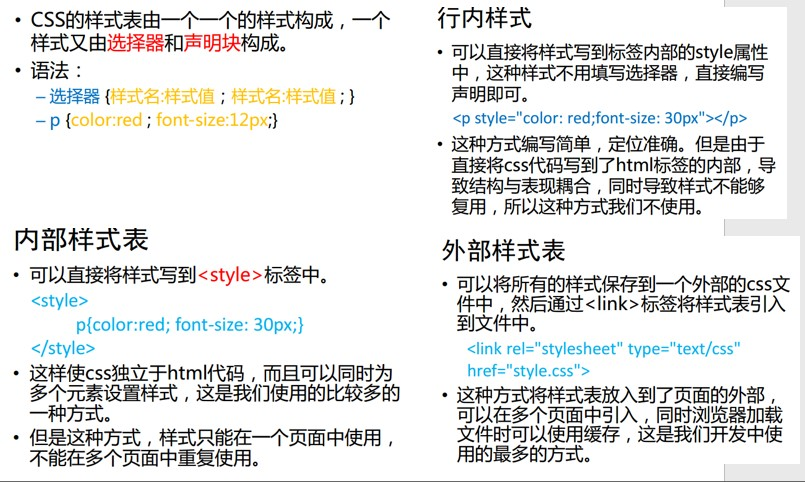

CSS基本元素
CSS:Cascading Style Sheets(层叠样式表)，可以为所有标签设置长宽高以及其他颜色属性等等，先附加属性会被后附加的属性覆盖
CSS常见几种样式

使用元素内嵌样式表，即行内样式
行内样式表,一般不推荐使用,在行内样式中各属性之间使用分号;隔开
文档内嵌样式表，即内部样式表，可以同时为多个标签设置样式，一般将其放入head中
外部式样式表(最常用)，在同一文件内，新建一个样式.css文件,在html中时使用link标签导入样式
使用Link标签修改h4的样式，一般将link放在head中
选择器 selector,使用Style标签,仅出现在文档内嵌样式表或外部样式表
- 根据标签选择：style标签+标签名{}，选择所有元素style标签+*{}
-
根据类属性（表示一类）选择：style标签+.类型名{},可以是不同的标签
根据类选择a
根据类选择p
-
根据id选择：style标签+#id{},可以是不同的标签
根据id选择h3
-
根据属性选择：style标签+[属性名]{}
根据属性名选择
-
其他选择：style标签+选择器+：{}
CSS元素边框效果
设置元素边框
CSS文本对齐方式
Hello HTML
CSS文本过渡效果transition
doc progress
CSS动画过渡效果animation
CSS变换效果